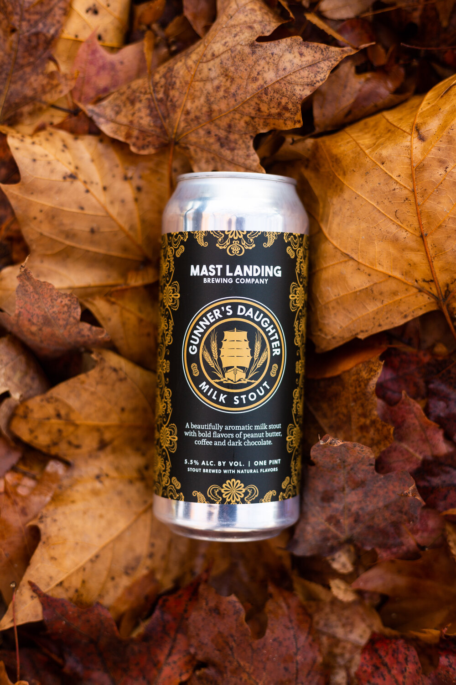

GUNNER'S DAUGHTER MILK STOUT
HOME
STOUTS
Gunner's Daughter
Mast Landing Brewing Company
A beautifully aromatic and balanced milk stout with delicious notes of peanut butter, coffee, and dark chocolate. This dark, mythical beer nods to the long-passed legends of our region’s seafarers.
Mast Landing Brewing Company was founded in the spirit of innovation, collaboration, and creativity. Since opening in 2015, we have showcased our beers at festivals across the country and internationally, shared them with new fans here in the Northeast, and poured them for countless locals and visitors at our tasting room in Westbrook, Maine.
Check out their site HERE 